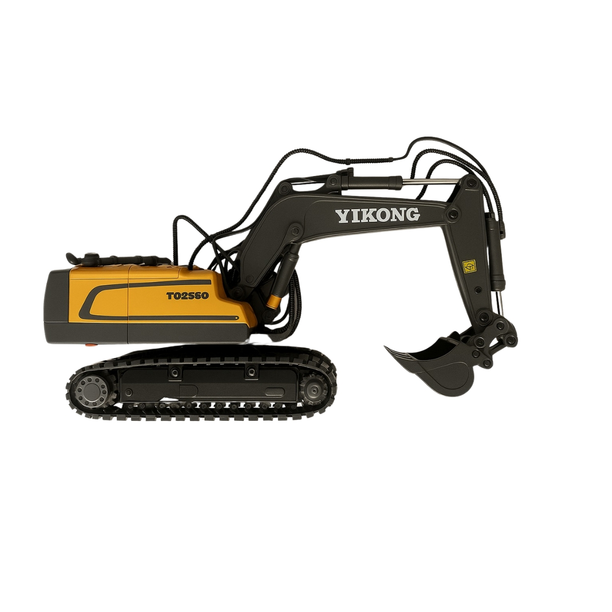

Escavadeira Hidráulica RC YIKONG T02560
Modelo Profissional em Escala
R$ 297,00
Experimente o realismo e a potência em suas mãos. A escavadeira YIKONG T02560 é um modelo em escala de alta precisão, projetado para entusiastas de todas as idades que buscam uma experiência autêntica de operação de maquinário pesado.
Principais Características:
- Controle remoto 2.4GHz Yi Gong para operação precisa e sem interferências.
- Movimentos totalmente funcionais: braço, antebraço e caçamba operam independentemente.
- Construção robusta com esteiras de alta tração e corpo em ABS de alta densidade.
- Design em escala detalhado para máximo realismo.
- Bateria recarregável de longa duração para mais tempo de diversão.